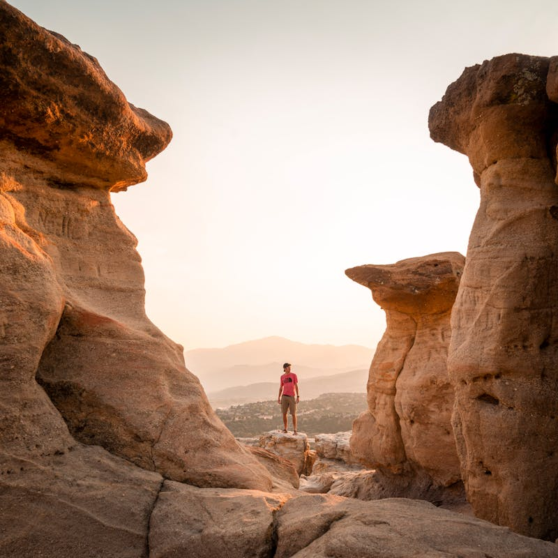

Activities and Attractions in Colorado Springs

Scenic view of Garden of the Gods, a popular Colorado Springs landmark.
| Category | Activity | Description |
|---|---|---|
| Nature | Garden of the Gods | Scenic park with red rock formations and hiking trails |
| Pikes Peak | Drive or ride to the summit for breathtaking views | |
| Wildlife | Cheyenne Mountain Zoo | High-altitude zoo with hands-on animal experiences |
| Bear Creek Nature Center | Trails and exhibits focused on local wildlife | |
| Education | U.S. Olympic & Paralympic Museum | Interactive exhibits celebrating U.S. athletes |
| Air Force Academy | Tour one of the top military academies in the U.S. |